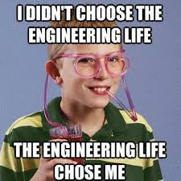

This school was one of my first real introductions to software engineering. This semester consisted of different aspects of software engineering, such as answering technical questions, introducing new programming concepts such as a front and back end, and working in an agile environment. Answering technical questions in the interview process was practiced in our weekly WODs where we were asked to answer a prompt within a given time period. Leading up to our final projects we were introduced to Bootstrap 5, React, Meteor, and Mongo, all with these tools to implement a fully functioning website. We were also introduced to working in an Agile software development environment in our final projects with our peers.
First, the introduction to UI Frameworks, a front-end, a back-end, and a database all of these used synchronously to create something beautiful. Throughout this semester, we were introduced to a new concept that was evidently used to create a functioning website. To begin, our semester began with the bootstrap, where we got a chance to tell a better story in our code by using frameworks. These frameworks introduced new tags and classes that simplified and shorten the length of our code whilst telling a good story. Next was the mention of React, where we were able to implement both the concepts we learned in javascript with the framework we learned as well. Finally, we learned about Meteor and MongoDB and we were able to use these tools to make a website dynamic. Those tools allowed our website to save, store, and populate information.
With our toolset from class, we started building. This was my first real experience with building a website from the ground up. For my final project, we practiced agile software development, where every week or two we’d have a list of issues/tasks and within that time period they must be completed. All this, with proper project management such as the use of GitHub allowed my group to constantly make updates to which lead to our evident goal of a functioning website. During this time, I felt a lot of pressure. The pressure came from knowing people depended on me to start their tasks, as well as the time crunch of weekly updates because if one person lacks, everyone else starts to struggle. However, in the times when everyone worked in harmony, we were able to build something beautiful within a relatively short period of time.
In the end, it’s very sad leaving this class as it was the most fun I’ve had in a long time in one while at the same time learning something valuable. Though, I will be taking on everything I learned from this class to my summer internship at Revacomm where I will be practicing web development as well as agile software development.